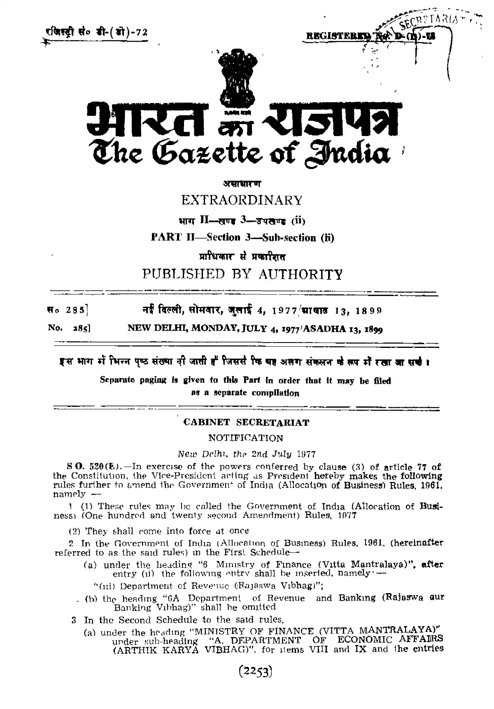
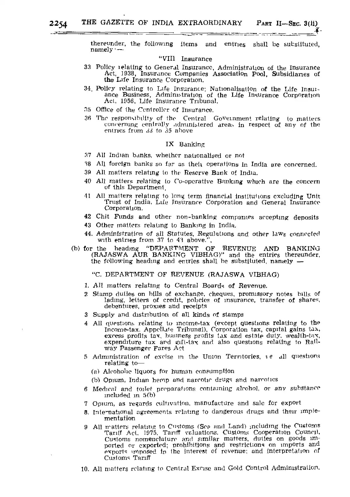
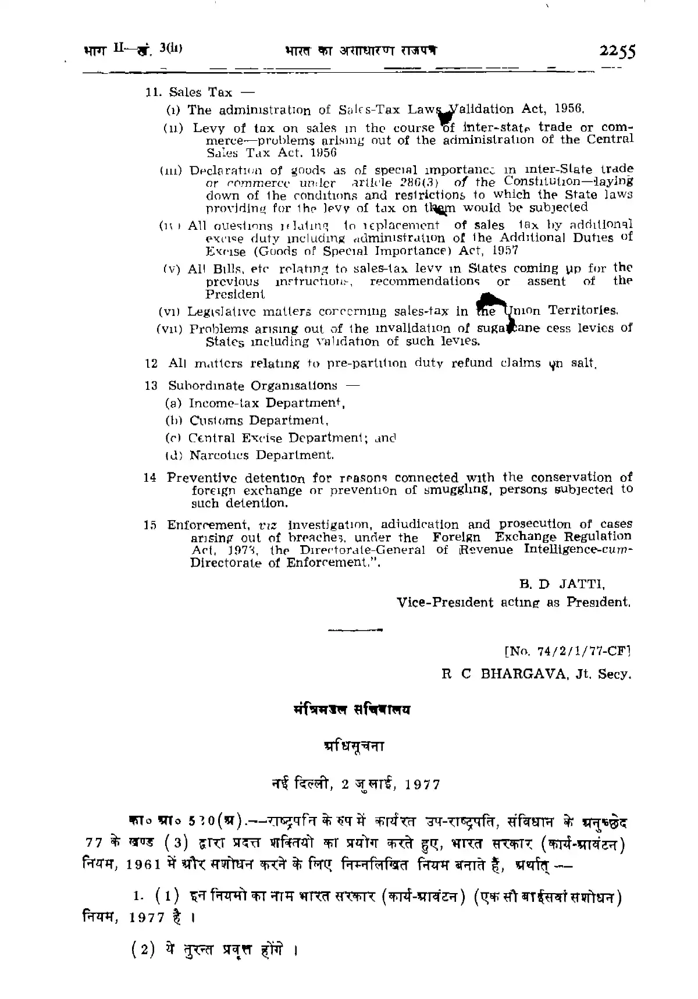
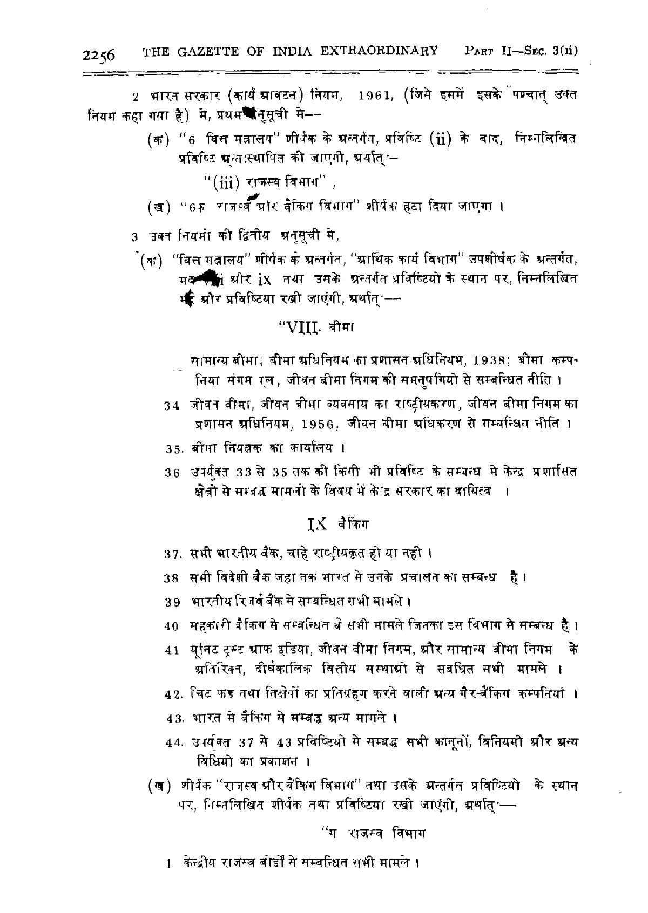
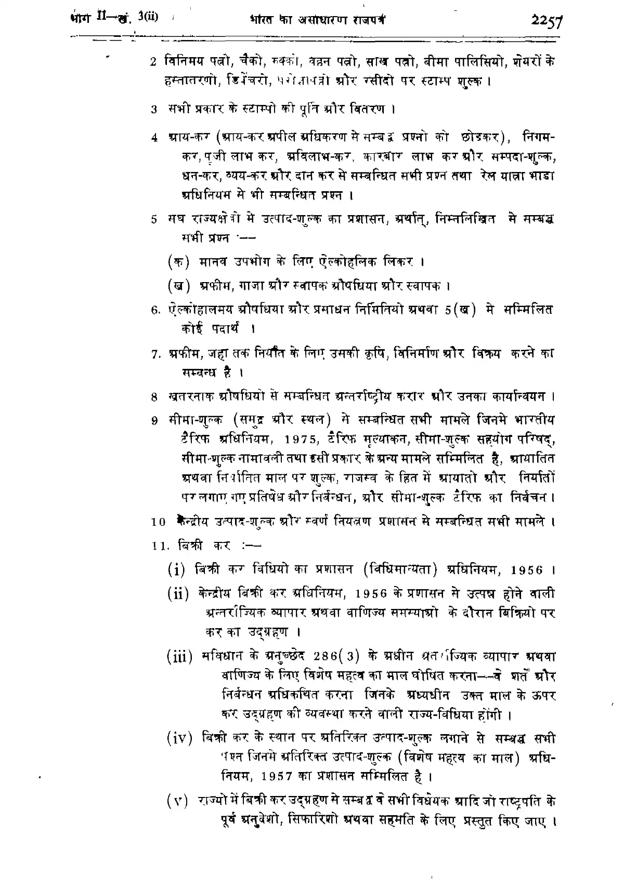
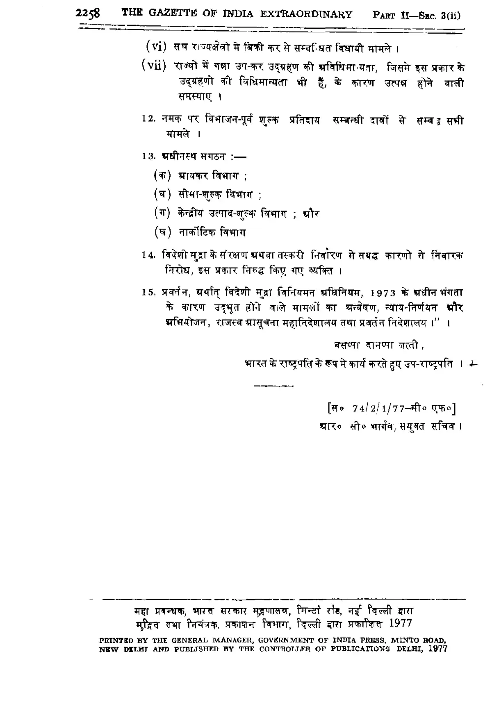

Amendment #122 (S.O. 520(E), 1977)
4 changes: 2 to the First Schedule, 2 to the Second Schedule. 4 applied
What it did to the ministries
- shrankDepartment of Revenue and Banking shrinks from 22 to 15 subjects change 2, 4 · histories: Revenue and Banking
The order, page by page
Page 1 of 6

123after Schedule 1 › Ministry of Finance › entry (ii)
- iii. Department of Revenue
applied at schedule 1 › ministry 6 › department iii in the Rules after #122
Schedule 1 › Department of Revenue and Banking
applied at schedule 1 › department 6A in the Rules after #122
Schedule 2 › MINISTRY OF FINANCE › DEPARTMENT OF ECONOMIC AFFAIRS › VIII; Schedule 2 › MINISTRY OF FINANCE › DEPARTMENT OF ECONOMIC AFFAIRS › IX
- VIII Insurance 33 Policy relating to General Insurance, Administration of the Insurance Act, 1938, Insurance Companies Association Pool, Subsidiaries of the Life Insurance Corporation. 34, Policy relating to Life Insurance; Nationalisation of the Life Insurance Business, Administration of the Life…
- 44. Administration of all Statutes, Regulations and other laws connected with entries from 37 to 4 above.
applied at schedule 2 › ministry MINISTRY OF FINANCE › department A › group_heading VIII in the Rules after #122
Page 2 of 6

4Schedule 2 › DEPARTMENT OF REVENUE AND BANKING
- C. DEPARTMENT OF REVENUE
- 1. All matters relating to Central Boards of Revenue.
- 2. Stamp duties on bills of exchange, cheques, promissory notes bills of lading, letters of credit, policies of insurance, transfer of shares debentures, proxies and receipts
- 3. Supply and distribution of all kinds of stamps
- 4. All questions relating to income-tax (except questions relating to the Income-tax, Appellate Tribunal), Corporation tax, capital gains tax excess profits tax, business profits tax and estate duty, wealth-tax expenditure tax and gill-tax and also questions relating to Rallway Passenger Fares Act
- 5. Administration of excise in the Union Territories, e all questions relating to
and 18 more
- a. Alcoholic liquors for human consumption
- b. Opium, Indian hemp and narcotic drugs and narcotics
- 6. Medical and toilet preparations containing alcohol, or any substance included in 5(b)
- 7. Opium, as regards cultivation, manufacture and sale for export
- 8. International agreements relating to dangerous drugs and their implementation
- 9. All matters relating to Customs (See and Land) including the Customs Tariff Act, 1975, Tariff vɛluations, Customs Cooperation Council Customs nomenclature and similar matters, duties on goods imported or exported; prohibitions and restrictions on imports and exports imposed in the interest of…
- 10. All matters relating to Central Excise and Gold Control Administration
- 11. Sales Tax (1) The administration of Sales-Tax Laws Validation Act, 1956. (11) Levy of tax on sales in the course of inter-state trade or commerce problems arising out of the administration of the Central Sales Tax Act, 1956 (1) Declaration of goods as of special importance in inter-Slate trade or…
- v. All Bills, etc relating to sales-tax levy in States coming up for the previous instruction, recommendations or assent of the President
- vi. Legislative matters corcerning sales-tax in the Union Territories. (V11) Problems arising out of the invalidation of sugarcane cess levies of States including validation of such levies.
- 12. All matters relating to pre-partition duty refund claims yn salt
- 13. Subordinatę Organisations -
- a. Income-tax Department
- b. Customs Department
- c. Central Excise Department; and
- d. Narcotics Department.
- 14. Preventive detention for reasons connected with the conservation of foreign exchange or prevention of smuggling, persons subjected to such detention.
- 15. Enforcement, i̇ız Investigation, adiudication and prosecution of cases arising out of breaches, under the Foreign Exchange Regulation Art. 1973, the Directorate-General of Revenue Intelligence-cum- Directorate of Enforcement.
applied at schedule 2 › ministry DEPARTMENT OF REVENUE AND BANKING in the Rules after #122
read page break
Page 3 of 6

Page 4 of 6

Page 5 of 6

Page 6 of 6

How this document was read
Edits to the reading
| Date | By | Edit | Before → after |
|---|---|---|---|
| 12 November 2026 | claude | word corrected |
From the Government of India (Allocation of Business) Rules, 1961 and their amendments, as published by the Cabinet Secretariat (cabsec.gov.in), read by orgpedia. The readings of the older scanned gazettes have known gaps.